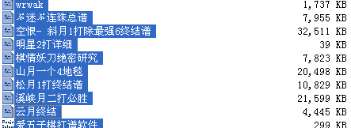

有偿发布连珠总谱
#1 有偿发布连珠总谱 作者：清平乐 发表时间：2007-6-5 22:20:12


很多连珠爱好者都有找不到齐全完美的连珠棋谱的困惑，本人打算将自己多年来自己精心制作的连珠总谱贡献出来，内容包括所有定式，众多的终结谱，各种比赛，高手实战，个人研究等等，一来满足广大连珠爱好者的需要，二来解决本人进来囊中羞涩问题。望棋友，斑竹谅解支持。为示诚信，本人先给谱，觉得合适再给钱。联系QQ:519645066
#2 Re:有偿发布连珠总谱 作者：小丸.net 发表时间：2007-6-6 12:46:55
先问一下，多少钱?
#3 Re:有偿发布连珠总谱 作者：无尽 发表时间：2007-6-6 22:16:23
该谱大小是否12.4M左右
#4 Re:有偿发布连珠总谱 作者：家族粉丝 发表时间：2007-6-6 22:32:59
晕，看到熟悉的刀谱了，555555还给他的主人吧。。。#5 Re:有偿发布连珠总谱 作者：清平乐 发表时间：2007-6-7 10:22:41
妖刀并非明教妖刀，请勿误会#6 Re:有偿发布连珠总谱 作者：yuelee 发表时间：2007-6-7 10:23:27
希望能够尊重原作者。
#7 Re:有偿发布连珠总谱 作者：楼主是个垃圾 发表时间：2007-6-7 10:24:06
这家伙简直不脸到极点，我第一次看见这种人，把别人的谱说是自己的研究,居然还拿出来卖
#8 Re:有偿发布连珠总谱 作者：清平乐 发表时间：2007-6-7 12:06:43
骂人是不对的，有根有据才好。#9 Re:有偿发布连珠总谱 作者：无尽 发表时间：2007-6-7 12:18:56
楼主还没回应我3楼的问题哦
#10 Re:有偿发布连珠总谱 作者：有志青年 发表时间：2007-6-7 12:23:06
我个人认为，楼主的举动没有错，只是棋谱的价值只能定位在搜集整理这个层次，目前网上的棋谱很多，也有很多是有错误的，楼主利用自己的时间将这些棋谱进行了整理修缮，然后有偿销售，本身没有错，因为这个过程中楼主也是花了心血的。
此种销售和专业制谱的高手相比，缺少原创，因此价值确实有高低。
但不能就此认为此种做法是错的，说实话现在的五子棋整个氛围还需要我们大家多一点宽容，将五子棋的地位抬高，有作为才有地位，如果我们自己在这里互相掐架，地位何来呢？
今日打电话给江苏棋院为学生申请级位证书，电话那头“你们什么棋？”“五子棋？”虽然五子棋已经立项了，可当你听到省棋院的领导以这种语气和你交流，那种感觉…………。
所有的五子棋爱好者们，让我们互相之间更多一点点的宽容，五子棋刚刚立项，我觉得各种做法都可以尝试，包括楼主的行为。
#11 Re:有偿发布连珠总谱 作者：小丸.net 发表时间：2007-6-7 12:27:00
楼主啊，你的谱，就以１０００爱五子棋币销售吧。保证你可以赚一把。
#12 Re:有偿发布连珠总谱 作者：清平乐 发表时间：2007-6-7 12:50:17
我都想无偿发布了，我都给出那么多份，基本全是骗子。无偿发布好啊，可能对提高广大爱好者的连珠水平有所帮助，不过这样肯定也有人骂。怎么着都触犯他利益了。这就是五子棋，一个我唯一热爱的棋种，一个但愿有着光明前景的棋种。骂吧~~~~~#13 Re:有偿发布连珠总谱 作者：行云流水 发表时间：2007-6-7 12:52:15
做什么事情都有多面性，只要赞成的人占多数，出自公心，可以公益，我想就可以尝试做了。#14 Re:有偿发布连珠总谱 作者：longfx 发表时间：2007-6-7 13:10:13
本来棋谱卖论坛币在月下，空恨似乎也有争议的。现在换成RMB的话，前景不明。不过楼主的棋谱是否有别人的劳动成果呢？比如我似乎看到我的某些研究了，嘿嘿。#15 Re:有偿发布连珠总谱 作者：清平乐 发表时间：2007-6-7 13:40:58
我坚信老祖宗发明的五子棋只是种游戏，附加在上面的任何一种想法，做法，都不可能是它本身的精神！我不知道你研究了什么，如果你敢确认是你的研究，来找我，删除。
本人打算将棋谱无偿发布，觉得自己可能有研究在我棋谱里的，速来找我。事后骂我无效。
#16 Re:有偿发布连珠总谱 作者：清平乐 发表时间：2007-6-7 13:44:38
研究研究，研究了什么，怎么都不付给黑石作者钱呢，黑石作者才为中国的五子棋研究工作做出杰出贡献#17 Re:有偿发布连珠总谱 作者：有志青年 发表时间：2007-6-7 13:48:48
很多五子棋想法，当还是想法的时候就被扼杀了，真的很艰难。
我斗胆的站出来，大呼一声“再多一些宽容！五子棋发展需要多种想法和做法！”
楼主，你勇敢的向前走！
#18 Re:有偿发布连珠总谱 作者：串串珠 发表时间：2007-6-7 14:16:02
定式公布是个错误，比赛谱公布也是不对的，什么研究之类更是大忌，这些该申请专利的。卖谱卖的是打谱的辛苦费还是研究成果，要买研究成果值老钱了。那得多少人的心血啊
#19 Re:有偿发布连珠总谱 作者：逆刃 发表时间：2007-6-7 18:49:14
支持你发出来!#20 Re:有偿发布连珠总谱 作者：longfx 发表时间：2007-6-7 19:08:46
我并不是反对楼主发布,只是楼主把别人的研究说成自己制作的多少有点另人不舒服.就好比论坛转帖,转帖就是转帖,非要说是原创才有意思吗?
不过,我看到了这个谱到5手的样本.里面我参与的那部分在注释上还保留着我的名字,这就足够了.
#21 Re:有偿发布连珠总谱 作者：无尽 发表时间：2007-6-7 21:32:53
还说非明教妖刀？
#22 Re:有偿发布连珠总谱 作者：家族粉丝 发表时间：2007-6-7 23:01:31
http://www.xeegoo.com/cgi-bin/topic.cgi?forum=35&topic=195&show=0和楼主发的图对比下。#23 Re:有偿发布连珠总谱 作者：风云连珠 发表时间：2007-6-8 9:06:35
我的妖刀也是这样标的，肯定抄我的，不过偶也是看别人这么标的
#24 Re:有偿发布连珠总谱 作者：串串珠 发表时间：2007-6-8 9:12:55
删了吧，楼主。别招人骂了。
#25 Re:有偿发布连珠总谱 作者：小嘿嘿 发表时间：2007-6-8 9:18:31
个破明教妖刀？很牛吗？，嘿嘿妖刀才是最强的！
#26 Re:有偿发布连珠总谱 作者：清平乐 发表时间：2007-6-8 9:21:32
最后一遍声明，如果认为有你的东西赶紧联系删除。不再发表任何评论#27 Re:有偿发布连珠总谱 作者：longfx 发表时间：2007-6-8 13:06:11
还是这么固执啊，我就是说这个谱里有我的一部分研究，但是因为已经注明了我的名字，我是不会再追究版权什么的了。如果明教其他朋友不想公布他们的部分，他们也会来表态的吧。
只是可惜的是，谱里收容的是我研究的过程而不是一个最后相对完美的结果。
#28 Re:有偿发布连珠总谱 作者：清平乐 发表时间：2007-6-8 20:51:56
本人承认传播过明教刀谱，并为此给研究者造成的可能不满，表示歉意。#29 Re:有偿发布连珠总谱 作者：鬼人破破破破 发表时间：2007-6-9 8:13:54
哈哈有人怕公开～～～
那是因为他有自己的目的
这个你喜欢你就公开吧
有什么了不起的～～～
#30 Re:有偿发布连珠总谱 作者：木月 发表时间：2007-6-18 16:55:53
两个字：无耻
#31 Re:有偿发布连珠总谱 作者：黄药师 发表时间：2007-6-18 22:44:12
12.4M？不会这么小吧？
那边一个花月就15M了！
#32 Re:有偿发布连珠总谱 作者：月月鸟 发表时间：2009-6-13 18:38:01
我要买楼主无偿得到的明教刀谱。#33 Re:有偿发布连珠总谱 作者：王小 发表时间：2009-6-13 21:39:22
个人建议 你时间写书吧，这种东西没有人买的。写书，我第一个顶！
#34 Re:有偿发布连珠总谱 作者：dyccj 发表时间：2009-6-14 20:58:12
不要吵了，有什么好吵的，专心玩游戏吧。#35 Re:有偿发布连珠总谱 作者：wrwak 发表时间：2009-6-14 20:59:07
我这边的谱全部免费，你们要什么啊，地毯我基本没有的。
论坛出现的这里都基本有记录。
#36 Re:有偿发布连珠总谱 作者：我爱江俊男 发表时间：2009-6-15 4:40:16
LZ的意思的想解决 进来囊中羞涩问题
但是我想你的目的很难达到，
只要你有偿的发布出来，谱就会在网络上流传开来
到那时候就没有人再会买你的谱了，除非你有绝对的“版权”，谁会花钱卖一个不花钱就能得到得谱呢？？
你只能得到前几个人能给你的money罢了
冒昧的问一下，你现在赚多少钱了呢？？？？
#37 Re:有偿发布连珠总谱 作者：刀魂 发表时间：2009-6-15 7:43:46
呵呵，其实不用什么谱，也可以下的非常好的， 黑石+终结者（正版）+人脑=三手中流高手
不过有个版权问题确实值得商榷：【地毯谱】： 第一，没有黑石和终结者是很难完成的；第二，地毯谱基本上没有谁能真正独立完成，基本
上 都是 在前人的基础上不断地拆棋拆出来的（我相信没有谁敢说自己真正意义上终结2打，三打，甚至是1打，几乎都是在前人的基础上完成的）
第 三，发谱的时候，最好标明原作者（也许你要问了，那么多作者标谁啊，我告诉你，标明贡献比较大的几个，再附带几个字“凡是拆过此路变
化 的大师”；这样是对别人劳动成果的尊重）
#38 Re:有偿发布连珠总谱 作者：wrwak 发表时间：2009-6-15 8:04:01
我发棋谱不标注谁制作，除非棋谱名字自带，不想放出来就不要放嘛。
#39 Re:有偿发布连珠总谱 作者：茗弈南极的绿洲 发表时间：2009-6-15 9:35:05
虽然这是楼主的权利，我们不好说什么。但是我还是不太赞同这种做法，是人都可以看出弊端大于利。有志青年说的不错，我们要多一点点宽容，尝试更广泛的交流，而不是以地域棋社为局限，互相封闭研究，功利化的趋势，而失去了五子棋本来的魅力。
#40 Re:有偿发布连珠总谱 作者：胆小的骆驼 发表时间：2009-6-15 9:38:31
 没有经济的支持，五子棋是不会发展起来的
没有经济的支持，五子棋是不会发展起来的